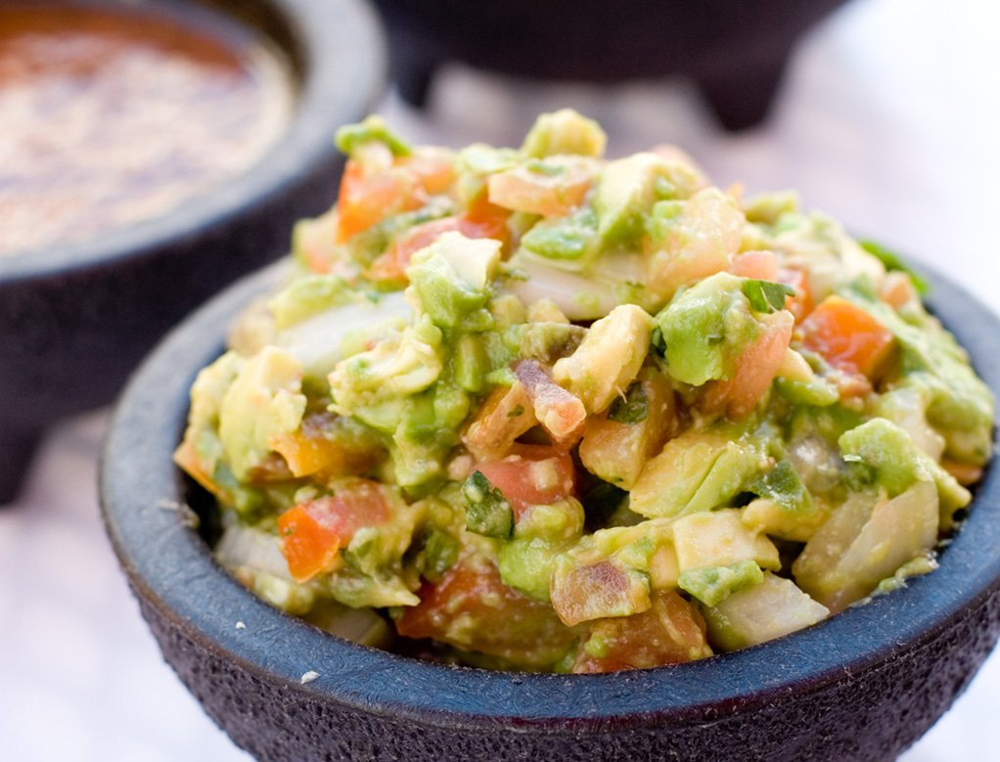
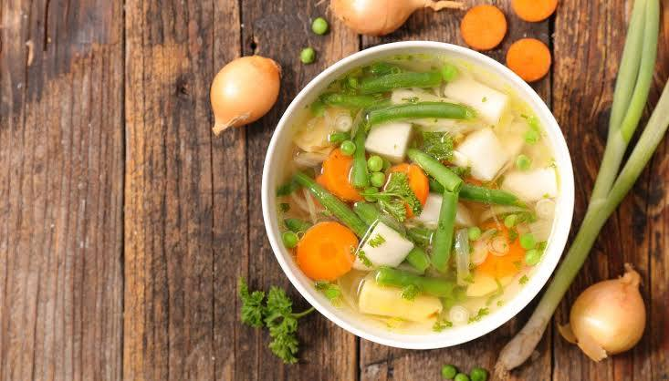

Aprende las bases de la cocina
Cada guía está diseñada para principiantes absolutos. Sin tecnicismos, sin presupuestos altos — solo práctica real desde tu cocina.
 Almuerzo
Almuerzo
Disfruta de un arroz con pollo lleno de sabor, preparado con ingredientes sencillos y técnicas fáciles para lograr un plato completo y casero. Aprende a cocinar el arroz correctamente, sazonar el pollo y combinar vegetales para una comida práctica y deliciosa.

AlmuerzoAprende a preparar una ensalada fresca y nutritiva utilizando atún, aguacate y vegetales frescos. Descubre combinaciones simples y saludables para crear un plato ligero, rápido y lleno de sabor.

AlmuerzoDescubre cómo preparar una sopa de verduras casera utilizando ingredientes frescos y fáciles de conseguir. Aprende técnicas básicas de cocción para lograr un caldo sabroso y una comida reconfortante y saludable.
 Almuerzo
Almuerzo
Aprende a cocinar una pasta deliciosa acompañada de verduras salteadas y salsas ligeras. Descubre cómo combinar sabores y texturas para crear un almuerzo fácil, colorido y balanceado.
 Almuerzos
Almuerzos
Prepara un wrap de pollo César utilizando pollo sazonado, vegetales frescos y aderezo cremoso envuelto en una tortilla suave. Aprende a armarlo correctamente y crear una comida rápida y deliciosa.
 Desayunos
Desayunos
Descubre cómo preparar arroz frito con huevo utilizando ingredientes básicos y técnicas sencillas de salteado. Aprende a lograr un arroz suelto, sabroso y perfecto para una comida rápida.